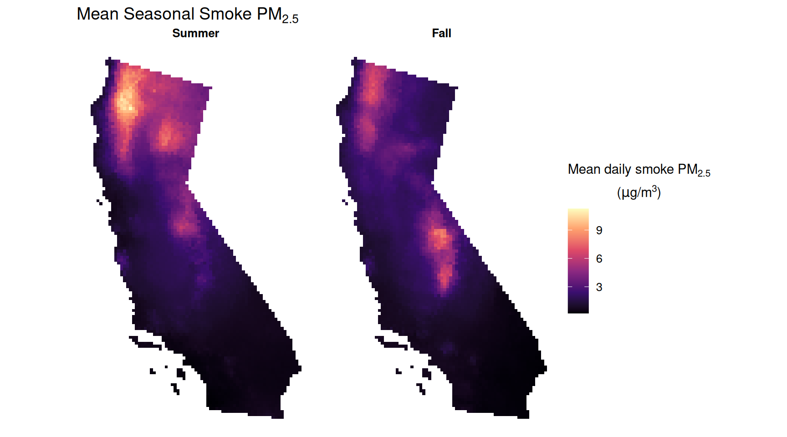
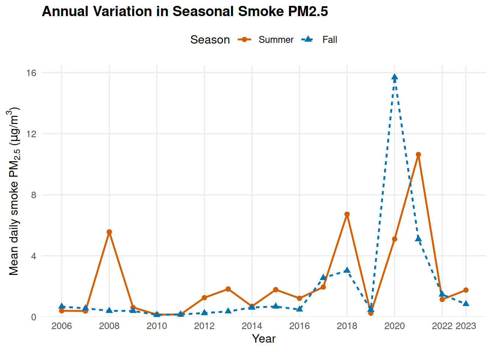
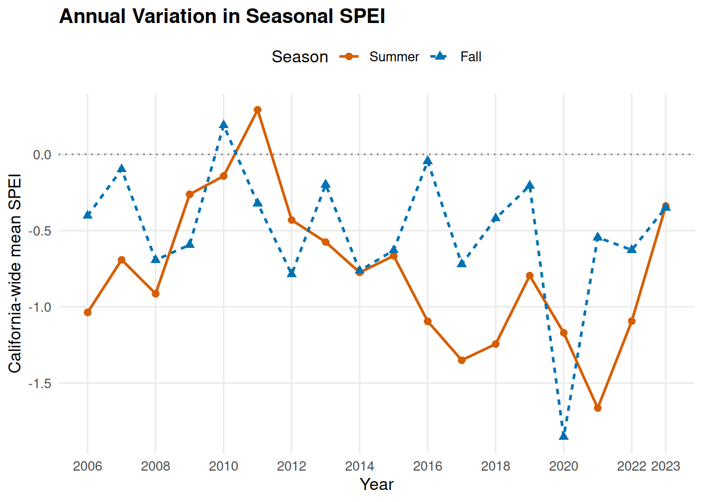
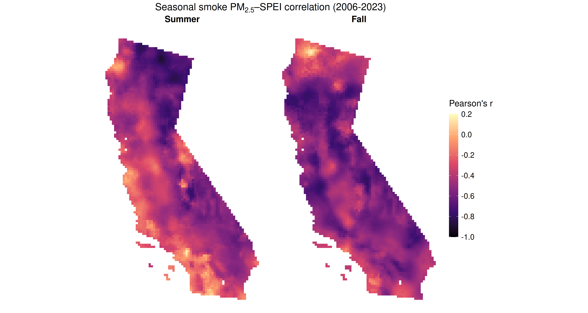

The trend of SMOKE-PM2.5 and its association with drought
Seasonal Trend in Wildfire Smoke PM2.5 in California and its association with Drought
Author
Yongli Tang
Published
November 27, 2026
1. Introduction
Fine particulate matter (PM2.5) from wildfire smoke is an important contributor to air pollution in the United States, particularly in the West, with important implications for public health and air quality management. Human-caused ignitions have extended the U.S. wildfire season beyond the period traditionally associated with lightning-caused fires (Balch et al., 2017). As wildfire activity and smoke emissions may change over time, understanding long-term trends in smoke-related PM₂.₅ is important for identifying changes in population exposure and informing air quality management.
Drought is a potential influence on the seasonal patterns of wildfire smoke. By reducing vegetation and fuel moisture, drought can create conditions favorable for wildfire activity and associated smoke emissions. Wang et al. (2022) found that increasing summer PM₂.₅ concentrations in the northwestern United States were primarily driven by increases in total carbonaceous aerosols, with stronger trends under drought conditions. This suggests that drought may play an important role in shaping long-term changes in smoke-related PM₂.₅.
This study will examine long-term trends in wildfire smoke PM₂.₅ across California during summer and fall, the primary seasons of wildfire activity. Sen’s slope and the Mann-Kendall test will be used to characterize spatial trends from 2006 to 2023. Pixel-level Pearson correlation analysis will then examine the associations between drought conditions and smoke-related PM₂.₅, identifying their spatial patterns across California.
2. Materials and methods
2.1 Materials
Daily 10km wildfire smoke PM2.5 data, 2006-2023
This machine-learning product has an overall R² of 0.63, with performance varying regionally (Childs et al., 2022). A zero prediction indicates a smoke day without elevated PM₂.₅. Data are available from the Environmental change and Human Outcomes lab.
Drought data
Monthly Standardized Precipitation Evapotranspiration Index (SPEI) data at 4 km resolution combine precipitation and potential evapotranspiration to characterize drought (Vicente-Serrano et al., 2010). More negative values indicate greater drought severity, while positive values indicate wetter conditions (Table 1). The SPEI data can be access through National Integrated Drought Information
Table 1. The drought level by SPEI category
SPEI value
Interpretation
≤ −2.0
Exceptional drought
−1.9 to −1.6
Extreme drought
−1.5 to −1.3
Severe drought
−1.2 to −0.8
Moderate drought
−0.7 to −0.5
Abnormally dry
Around 0
Near-normal conditions
Positive values
Wetter-than-normal conditions
Drought ranges follow the rounded legend labels on Drought.gov.
Read daily smoke file and check attributes. The dataset daily_smoke covers the entire United States from 2006 to 2023. The column grid_id_10km contains a unique identifier for each 10-km grid cell and will be used to join the data with the GeoID shapefile.
Show Code
dailysmoke =readRDS("data/smokePM2pt5_predictions_daily_10km_20060101-20231231.rds")# # Check object class# class(dailysmoke) # "data.frame"# # # Check object structure# str(dailysmoke) # 3 variables,`grid_id_10km`,`date`,`smokePM_pred`# # Number of unique grid IDs# length(unique(dailysmoke$grid_id_10km))# # Check dimensions# dim(dailysmoke)# # Check column names (if it is a data frame)# names(dailysmoke)# Preview the first few recordsprint(head(dailysmoke))
Calculate seasonal mean daily smoke PM2.5, retain only summer and fall observations, and return a dataframe containing the Year, Season, and Grid_ID combinations.
Show Code
grid_ids <-unique(dailysmoke$grid_id_10km)smoke_season <- dailysmoke |>mutate(date =as.Date(date), Year =year(date), month =month(date)) |>filter(month %in%6:11) |>mutate(Season =if_else(month <=8, "summer", "fall")) |>group_by(grid_id_10km, Year, Season) |># Sum recorded predictions; omitted zero-smoke days add nothing to the sum.summarise(aggsmokePM_pred =sum(smokePM_pred, na.rm =TRUE), .groups ="drop") |># Divide by all calendar days: summer = 92, fall = 91.mutate(dailysmokePM_pred = aggsmokePM_pred/if_else(Season =="summer", 92, 91)) |># Fill entirely absent grid-year-season combinations with zero.complete(grid_id_10km = grid_ids, Year =2006:2023, Season =c("summer", "fall"), fill =list(dailysmokePM_pred =0))print(head(smoke_season,5))
# A tibble: 5 × 5
grid_id_10km Year Season aggsmokePM_pred dailysmokePM_pred
<int> <dbl> <chr> <dbl> <dbl>
1 1397 2006 fall NA 0
2 1397 2006 summer NA 0
3 1397 2007 fall NA 0
4 1397 2007 summer 16.4 0.179
5 1397 2008 fall NA 0
Load the GeoID shapefile, clip it to California’s boundary, and join it with the seasonal mean smoke data to create an sf object named smokeCA. As shown in Figure 1
Show Code
library(sf)# Load the 10 km grid shapefilegrid_10km <- sf::st_read("data/10km_grid_wgs84/10km_grid_wgs84.shp", quiet =TRUE)# dim(grid_10km)# head(grid_10km,5)#Get the data type of every column# print(sapply(grid_10km, class))# Load the geoshapefile of CaliforniaCA <- sf::st_read("data/tl_2025_us_state/tl_2025_us_state.shp", quiet =TRUE) |> dplyr::filter(STATEFP =="06")# head(CA,5)# Match the CRS and combine California's polygons into one boundary.CA_boundary <-st_union(st_transform(CA, st_crs(grid_10km)))sf::st_write(CA_boundary,"data/10km_grid_wgs84CA.gpkg",delete_dsn =TRUE)
Deleting source `data/10km_grid_wgs84CA.gpkg' failed
Writing layer `10km_grid_wgs84CA' to data source
`data/10km_grid_wgs84CA.gpkg' using driver `GPKG'
Writing 1 features with 0 fields and geometry type Multi Polygon.
Show Code
# Clip the joined grid to California, retaining its data columns.grid_CA <-st_intersection(grid_10km, CA_boundary)plot(st_geometry(grid_CA))# Spatially Join the 10km grid shapefile with corresponding PM2.5 data by IDsmokeCA <-left_join(grid_CA,smoke_season,by=c("ID"="grid_id_10km"))# sf::st_write(# smokeCA,# "data/10km_grid_wgs84CA.gpkg",# delete_dsn = TRUE)
Figure 1: Spatial distribution of the 10 km grid cells across California.
Convert the seasonal mean smoke data into raster format.
Show Code
library(sf)library(terra)# 1. Inspect the sf object# cat("## 1. Inspect the spatial data\n\n")# cat("- Geometry type:", paste(unique(st_geometry_type(smokeCA)), collapse = ", "), "\n")# cat("- CRS:", st_crs(smokeCA)$input, "\n")# cat("- Number of features:", nrow(smokeCA), "\n")# cat("- Number of attributes:", ncol(st_drop_geometry(smokeCA)), "\n\n")# Check attribute columns# print(names(smokeCA))# Transform the 10-km grid to EPSG:5070smokeCA_proj <-st_transform(smokeCA, 5070)# Convert sf to SpatVectorsmokeCA_vect <- terra::vect(smokeCA_proj)# Align the extent to a fixed 10-km grid so cells are exactly square.cell_size <-10000grid_extent <-as.vector(terra::ext(smokeCA_vect))x_min <-floor(grid_extent[1] / cell_size) * cell_sizex_max <-ceiling(grid_extent[2] / cell_size) * cell_sizey_min <-floor(grid_extent[3] / cell_size) * cell_sizey_max <-ceiling(grid_extent[4] / cell_size) * cell_sizer <- terra::rast(nrows =as.integer(round((y_max - y_min) / cell_size)),ncols =as.integer(round((x_max - x_min) / cell_size)),xmin = x_min, xmax = x_max,ymin = y_min, ymax = y_max,crs = terra::crs(smokeCA_vect))stopifnot(all(abs(terra::res(r) - cell_size) <1e-8))# Get unique seasons and years# Use consecutive years from the earliest to the latest observed year.years <-seq.int(min(smokeCA_proj$Year, na.rm =TRUE), max(smokeCA_proj$Year, na.rm =TRUE))seasons <-sort(unique(na.omit(as.character(smokeCA_proj$Season))))dir.create("data", showWarnings =FALSE)for (ss in seasons) {# Initialize one NA band per year so missing combinations retain their positions. pm25_season <- terra::rast(r, nlyrs =length(years), vals =NA_real_)for (i inseq_along(years)) { sub_grid <- smokeCA_proj |>filter(Year == years[i], Season == ss)if (nrow(sub_grid) ==0) next# Write the existing seasonal means into the corresponding annual band. pm25_season[[i]] <- terra::rasterize(terra::vect(sub_grid), r, field ="dailysmokePM_pred")}names(pm25_season) <-paste0("dailysmokePM_pred", years) output_file <-file.path("data",paste0("PM25_CA_", ss, ".tif"))# Write raster terra::writeRaster( pm25_season, output_file,overwrite =TRUE)}
2.2.2 Trend Analysis
Apply Sen's slope and the Mann-Kendall test to estimate long-term trends and assess their statistical significance by season and pixel. (Packages: trend, Kendall)
2.2.3 Pixel-level Correlation
Calculate Pearson correlation coefficients between seasonal drought indices and smoke PM2.5 time series for each pixel. (Package: stats)
3. Results
3.1 Annual Spatial Mean of Smoke PM2.5
Mean daily wildfire smoke PM₂.₅ concentrations showed distinct seasonal spatial patterns (Figure 2). In summer, higher concentrations were more widespread across northern California. In fall, elevated concentrations were more localized, with prominent hotspots in northern and central-eastern California. Coastal areas and much of southern California generally had lower concentrations in both seasons.

Figure 2: California-wide spatial mean of seasonal daily wildfire smoke \(\mathrm{PM}_{2.5}\) concentrations for summer and fall, 2006–2023.
3.2 Overall Annual Temporary Trends in Smoke PM2.5
As shown in Figure 3, California-wide seasonal mean daily wildfire smoke PM₂.₅ concentrations were generally low before 2016, except for a summer peak in 2008 that coincided with widespread lightning-triggered fires.
Variability increased during 2017-2021, with the highest fall concentration in 2020 (15.70 µg/m³) and the highest summer concentration in 2021 (10.64 µg/m³). These peaks coincided with major wildfire activity, including the August Complex and Creek fires in 2020 and the Dixie and Caldor fires in 2021. Drought, extreme heat, and reduced snowpack likely helped create conditions favorable for severe wildfire activity in 2021. The Concentrations declined sharply in 2022-2023, highlighting the influence of episodic high-smoke years.

Figure 3: spatial mean of seasonal daily smoke pm2.5 concentrations for summer and fall
3.3 Spatial Trends in Smoke PM2.5
Show Code
library(terra)library(trend)library(Kendall)calc_sen <-function(x) { x <- x[is.finite(x)]if (length(x) <10) return(NA_real_)if (length(unique(x)) ==1) return(0)unname(trend::sens.slope(x)$estimates)}calc_mk <-function(x) { x <- x[is.finite(x)]if (length(x) <10) return(NA_real_)if (length(unique(x)) ==1) return(NA_real_)unname(Kendall::MannKendall(x)$sl)}# Calculate Sen's slopesummer_sen <-app(summer, fun = calc_sen)fall_sen <-app(fall, fun = calc_sen)# Calculate Mann-Kendall p-valuessummer_mk <-app(summer, fun = calc_mk)fall_mk <-app(fall, fun = calc_mk)# Combine slope and p-value into two bands.summer_result <-c(summer_sen, summer_mk)fall_result <-c(fall_sen, fall_mk)names(summer_result) <-c("Sen_slope", "MK_pvalue")names(fall_result) <-c("Sen_slope", "MK_pvalue")# Save one two-band GeoTIFF per season.# writeRaster(summer_result, "data/PM25_CA_summer_trend.tif", overwrite = TRUE)# writeRaster(fall_result, "data/PM25_CA_fall_trend.tif", overwrite = TRUE)
As shown in Figure 4, smoke PM₂.₅ concentrations generally increased across most of California. The largest summer increases occurred in northwestern California, while fall increases were most pronounced in northern and east-central California. Statistically significant increases were observed in both seasons.
Figure 4: California-wide spatial mean of seasonal daily wildfire smoke \(\mathrm{PM}_{2.5}\) concentrations for summer and fall, 2006-2023.
3.4 The Association between Drought and Smoke PM2.5
Show Code
library(terra)drought_index <-rast("data/nclimgrid-spei-pearson-01_CA.nc")dates <-time(drought_index)years <-as.integer(format(dates, "%Y"))months <-as.integer(format(dates, "%m"))# cat("Date range:", range(dates), "\n")# cat("Month range:", range(months), "\n")get_seasonal_spei <-function(season_months, season_name) { idx <-which(years %in%2006:2023& months %in% season_months)for (y in2006:2023) { observed <- months[idx][years[idx] == y]if (!identical(sort(observed), as.integer(season_months))) {stop(sprintf("Missing or duplicate months: %s %d", season_name, y)) } } result <-tapp(drought_index[[idx]], index = years[idx], fun = mean, na.rm =TRUE)names(result) <-paste0("SPEI_", season_name, "_", 2006:2023)return(result)}# Average June–August and September–November for each year.drought_summer <-get_seasonal_spei(6:8, "summer")drought_fall <-get_seasonal_spei(9:11, "fall")# print(drought_summer)# print('--------------------')# print(drought_fall)# Save 18 annual bands for each season, covering 2006-2023.writeRaster(drought_summer, "data/SPEI_CA_summer.tif", overwrite =TRUE)writeRaster(drought_fall, "data/SPEI_CA_fall.tif", overwrite =TRUE)
Show Code
library(terra)# The season mean drought index above has a spatial resolution of 4km, whereas our # PM2.5 data has a spatial resolution of 10km. Now, re sample the drought index to # the resolution of pm2.5.# Read seasonal rasters.summer <-rast("data/PM25_CA_summer.tif")fall <-rast("data/PM25_CA_fall.tif")drought_summer <-rast("data/SPEI_CA_summer.tif")drought_fall <-rast("data/SPEI_CA_fall.tif")# Match the CRS, resolution, extent and alignment of each PM2.5 grid.align_drought <-function(drought, pm25) { target <- pm25[[1]]if (crs(drought) ==""||crs(target) =="") {stop("Missing CRS information.") }cat("Same CRS:", same.crs(drought, target), "\n")if (same.crs(drought, target)) { result <-resample(drought, target, method ="average") } else { result <-project(drought, target, method ="average") }names(result) <-names(drought)stopifnot(compareGeom(result[[1]], target, res =TRUE))return(result)}drought_summer_10km <-align_drought(drought_summer, summer)
# Check the resulting grids.# print(drought_summer_10km)# print(drought_fall_10km)# print(rbind(PM25 = res(summer), SPEI = res(drought_summer_10km)))# Save the aligned seasonal rasters.writeRaster(drought_summer_10km, "data/SPEI_CA_summer_10km.tif", overwrite =TRUE)writeRaster(drought_fall_10km, "data/SPEI_CA_fall_10km.tif", overwrite =TRUE)
Both seasons showed substantial interannual variability for drought index (Figure 5). Notably, SPEI reached its lowest values in 2020 and 2021, indicating more severe drought conditions during these two years.
Show Code
library(terra)library(dplyr)library(ggplot2)get_annual_mean <-function(r, season) { layer_years <-as.integer(stringr::str_extract(names(r), "[0-9]{4}$"))if (anyNA(layer_years) ||anyDuplicated(layer_years)) {stop("Each raster band must end with a unique four-digit year.") } x <- terra::global(r, fun ="mean", na.rm =TRUE) tibble::tibble(Year = layer_years, Mean_SPEI = x$mean, Season = season)}annual_spei <-bind_rows(get_annual_mean(drought_summer_10km, "Summer"),get_annual_mean(drought_fall_10km, "Fall")) |>mutate(Season =factor(Season, levels =c("Summer", "Fall"))) |>arrange(Season, Year)p_annual <-ggplot( annual_spei,aes(x = Year, y = Mean_SPEI, color = Season, linetype = Season, shape = Season)) +geom_hline(yintercept =0, color ="grey50", linetype ="dotted") +geom_line(linewidth =0.9) +geom_point(size =2.2) +scale_color_manual(values =c("Summer"="#D55E00", "Fall"="#0072B2")) +scale_x_continuous(breaks =sort(unique(c(seq(min(annual_spei$Year), max(annual_spei$Year), by =2),max(annual_spei$Year) )))) +labs(title ="Annual Variation in Seasonal SPEI",x ="Year",y ="California-wide mean SPEI" ) +theme_minimal(base_size =12) +theme(plot.title =element_text(face ="bold"),legend.position ="top",panel.grid.minor =element_blank())print(p_annual)

Figure 5: Mean drought index from 2006 to 2023 for summer and fall in California
Show Code
# Calculate the pixel-level personal coefficient between season pm2.5 and drought.# Match bands to 2006-2023 using the year at the end of each band name.match_years <-function(r) { years <-as.integer(sub(".*([0-9]{4})$", "\\1", names(r)))if (anyNA(years) ||anyDuplicated(years) ||!all(2006:2023%in% years)) {stop("Check band names: each band must end with a unique year covering 2006–2023.") }return(r[[match(2006:2023, years)]])}# Calculate the temporal Pearson correlation at each pixel.pixel_pearson <-function(pm25, drought) { pm25 <-match_years(pm25) drought <-match_years(drought)stopifnot(compareGeom(pm25, drought, lyrs =TRUE, crs =TRUE, res =TRUE)) n <-nlyr(pm25) result <-app(c(pm25, drought), fun =function(v) { x <- v[seq_len(n)] y <- v[n +seq_len(n)] valid <-is.finite(x) &is.finite(y) x <- x[valid] y <- y[valid]# Return NA for fewer than 3 paired years or constant values.if (length(x) <3||sd(x) ==0||sd(y) ==0) {return(NA_real_) }return(cor(x, y, method ="pearson")) })names(result) <-"Pearson_r"return(result)}cor_summer <-pixel_pearson(summer, drought_summer_10km)cor_fall <-pixel_pearson(fall, drought_fall_10km)
Figure 6 shows the Pearson correlation between PM2.5 and drought index for summer and fall. Smoke PM₂.₅ and SPEI were negatively correlated across most of California in both summer and fall, indicating that drier years generally had higher smoke concentrations. Correlations were stronger and more widespread in fall, while summer showed greater spatial variation, with weaker correlations along parts of the coast and in southern California.

Figure 6: Pixel-wise Pearson correlation between PM₂.₅ and drought index during summer and #fall, 2006-2023.
4. Conclusions
This project analyzed trends in summer and fall wildfire smoke PM₂.₅ concentrations from 2006 to 2023 and examined their association with drought conditions. There are several main findings.
Summer and fall smoke PM₂.₅ concentrations showed substantial year-to-year variation from 2016 onward, with peaks in 2020 and 2021. Northwestern and central California showed the strongest increasing trends in smoke PM₂.₅ during both seasons, while Southern California experienced smaller increases.
Drought conditions generally became more severe, particularly in 2020 and 2021. Smoke PM₂.₅ concentrations and SPEI were negatively correlated across most of California in both seasons, indicating that drier years generally had higher smoke concentrations. Correlations were stronger and more widespread in fall, while summer showed greater spatial variation, with weaker correlations along parts of the coast and in Southern California.
5. References
Balch, J. K., Bradley, B. A., Abatzoglou, J. T., Nagy, R. C., Fusco, E. J., & Mahood, A. L. (2017). Human-started wildfires expand the fire niche across the United States. Proceedings of the National Academy of Sciences, 114(11), 2946–2951. https://doi.org/10.1073/pnas.1617394114
Childs, M. L., Li, J., Wen, J., Heft-Neal, S., Driscoll, A., Wang, S., Gould, C. F., Qiu, M., Burney, J., & Burke, M. (2022). Daily Local-Level Estimates of Ambient Wildfire Smoke PM2.5 for the Contiguous US. Environmental Science & Technology, 56(19), 13607–13621. https://doi.org/10.1021/acs.est.2c02934
Wang, Y., Wang, J., Wang, Y., & Li, W. (2022). Drought Impacts on PM2.5 Composition and Amount Over the US During 1988–2018. Journal of Geophysical Research: Atmospheres, 127(24), e2022JD037677. https://doi.org/10.1029/2022JD037677
Vicente-Serrano, S. M., Beguería, S., & López-Moreno, J. I. (2010). A Multiscalar Drought Index Sensitive to Global Warming: The Standardized Precipitation Evapotranspiration Index. Journal of Climate, 23(7), 1696–1718. https://doi.org/10.1175/2009JCLI2909.1